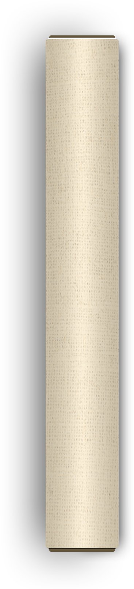

点击上传，或拖入一张画作 · 支持 JPG / PNG
或从示例画作开始


画上标注 · Inline Annotation
月光下的诗人
valence+0.20
arousal-0.10
林逋独行夜咏梅。
操作说明 · How to use
三步在画上创作
-
1
点击 · 标记点
画上的同心圆是模型自动检测出的"情感高亮"位置。点开任一个，左上方会浮出该局部的 V-A 坐标与 RAG 解读。
-
2
选择 · 情感标签
底部「我的标签」是你加给整张画的情感词；「AI 识别」是模型自动看出的内容标签。
-
3
生成 · 进入输出
点右下"生成乐曲"。系统按 V-A + 标签 + RAG 翻译成 MusicGen prompt，给出与画意相称的音乐。